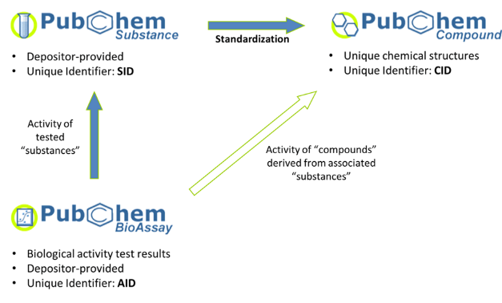
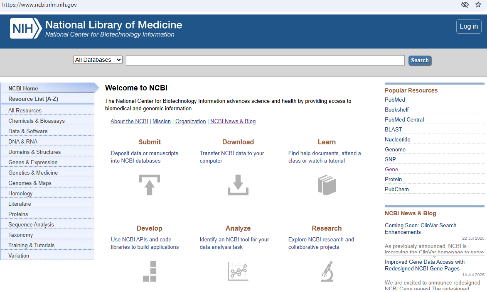

5.1 Exploring PubChem#
UNDERCONSTRUCTION This is a non-programmatic activity designed to further your familiarity with PubChem. It is based on the Current Protocols article Exploring Chemical Information in PubChem, the 2019 Cheminformatics OLCC activities 4.1 PubChem Web Interface for Text
PubChem Overview (2025)#
The PubChem homepage provides a unified search interface that allows users to explore an extensive set of interrelated chemical and biological databases. Originally centered around the three core databases—Compound, Substance, and BioAssays—PubChem has since expanded to include additional data domains such as Genes, Proteins, Pathways, Taxonomies, Cell Lines, Patents, Literature, and more. These additional records enable users to explore the relationships between small molecules and their biological context.
PubChem as a Data Aggregator#
The public often has a misconception of PubChem as a data validator. PubChem is really a data aggregator and as of July 2025 there are over 1,063 sources, including government agencies, university labs, pharmaceutical companies, substance vendors, and other databases. An up-to-date list of PubChem’s data sources is available at the PubChem Sources page. When a source contributes data it is stored as a substance or bioassay data record and assigned an substance ID (SID) or assay ID (or AID). PubChem than uses a canonicalization technique to associate the SID with a specific chemical structure and uses that structure to associate the substance record with a compound record. So the compound record is the aggregation of the substance records uploaded from multiple data sources for a specific compound, and so doing it maintains the data provenance by linking back to the original Substance record and depositors information. If an uploaded bioassay has an associated SID, it is then connected to the compound record of the compound that SID is associated with. See the PubChem document: What is the difference between a substance and a compound in PubChem?
Does PubChem Validate the data uploaded by a depositor?
No, PubChem only validates the chemical structure and then uses that to connect the substance record with the compound record of that chemical.

Relationship showing how data sources contribute substance and bioassay data that can be connected to a compound’s data record. (image source link.)
To gain an understanding of pubchem you should go to the about link on the top of the homepage The left column allows you t navigate through the documentation
In short, the PubChem homepage serves as a centralized hub for accessing chemical, biological, and pharmacological data linked through a chemical lens.
PubChem’s Landing Page#
This activity will be a quick exploration of the features of PubChem’s landing page, https://pubchem.ncbi.nlm.nih.gov/.
About#
The left frame of the About link provides access to the resources in the Docs link and we will systematically go over these shortly.
Entrez#
NIH Entrez (French for “Enter”) is the search and retrieval system of the National Center for Biotechnology Information (NCBI), a division of the U.S. National Library of Medicine (NLM) of the National Institutes of Health (NIH). It is essentially an integrated search engine for accessing a wide range of interconnected databases hosted by NCBI, of which PubChem is one. Entrez is integrated throughout NCBI resources and can be accessed through the search bar on top of the NCBI landing page https://www.ncbi.nlm.nih.gov/

Screenshot of https://www.ncbi.nlm.nih.gov/ (08/2/2025).
The Entrez Help NCBI Help Manual is a 20 minute read that goes over the Entrez Databases, how to access and search them. A complete list of Entrez resources can be found at the All Resources link. PubChem’s home page is a “unified chemical search interface” that covers all three of PubChem’s primary databases (Substance, Compound and BioAssay) and supports searches using molecular formula, and line notations like SMILES and InChIs. There is an option for text searches within Entrez from the PubChem homepage and more information is available in the Entrez Advanced Search option.
NLM Video Tutorials on PubChem#
The following video tutorials are part of the NLM PubChem training course and are available here for you to review.
Searching with Structures iin PubChem#
This tutorial goes over using the PubChem Sketcher. A more comprehensive tutorial can e obtained in the PubChem Sketcher Help Doc.
%%html
# this is a code cell that connects to a youtube, and you need to execute it the first time you start the kernel with shift-enter.
<iframe width="560" height="315" src="https://www.youtube.com/embed/DWTvE0pXwBU?si=TOIfORcuJspPehQb" title="YouTube video player" frameborder="0" allow="accelerometer; autoplay; clipboard-write; encrypted-media; gyroscope; picture-in-picture; web-share" referrerpolicy="strict-origin-when-cross-origin" allowfullscreen></iframe>
Finding Chemical Information in PubChem#
%%html
<iframe width="560" height="315" src="https://www.youtube.com/embed/jZw7w9jithI?si=K9YMsxLYILAtVyGQ" title="YouTube video player" frameborder="0" allow="accelerometer; autoplay; clipboard-write; encrypted-media; gyroscope; picture-in-picture; web-share" referrerpolicy="strict-origin-when-cross-origin" allowfullscreen></iframe>
Finding Links and Citations in PubChem#
%%html
<iframe width="560" height="315" src="https://www.youtube.com/embed/jpb0XZeCd5Q?si=fmhtaZNgcF_OkNa8" title="YouTube video player" frameborder="0" allow="accelerometer; autoplay; clipboard-write; encrypted-media; gyroscope; picture-in-picture; web-share" referrerpolicy="strict-origin-when-cross-origin" allowfullscreen></iframe>